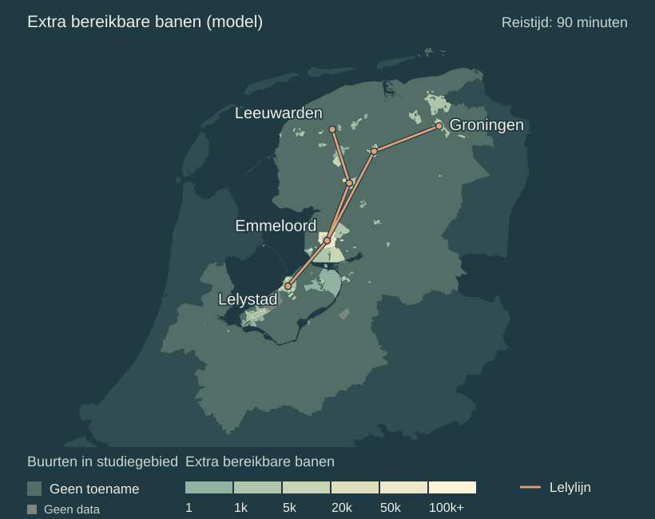

Vervoer en bereikbaarheid
De Lelylijn en
toegang tot werk
Ik modelleerde hoe de voorgestelde Lelylijn de bereikbaarheid van bestaande banen zou kunnen veranderen.
Het antwoord hangt af van de maximale reistijd, de onderzochte bevolking en hoe een eerlijke verdeling wordt gemeten.
Bekijk het Lelylijn-onderzoek